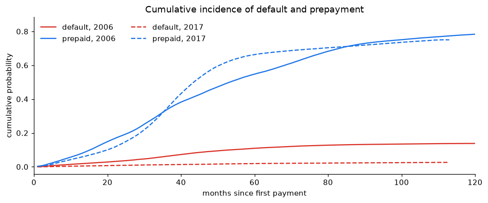
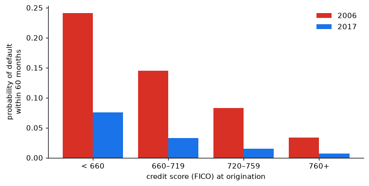

import sys
sys.path.insert(0, "../src")
import warnings
warnings.filterwarnings("ignore")
import matplotlib.pyplot as plt
import numpy as np
import pandas as pd
from credit_risk.data import load_loans
from credit_risk.survival import cumulative_incidence, cif_at
pd.set_option("display.precision", 4)
plt.rcParams.update({"figure.dpi": 110, "axes.spines.top": False, "axes.spines.right": False})
BLUE, RED, GREY = "#1a73e8", "#d93025", "#80868b"
loans = load_loans((2006, 2017))
curves = {v: cumulative_incidence(g["time"], g["event"]) for v, g in loans.groupby("vintage")}2. Survival with competing risks: default or prepayment
How likely is a mortgage to default within t months of its first payment? It sounds like a textbook Kaplan-Meier problem. It is not, because a loan can leave the portfolio in two ways.
Trap 2: treating prepayment as censoring doubles the default probability
Most loans do not default or run to maturity: they are prepaid when the borrower sells the house or refinances. The usual shortcut, “1 − Kaplan-Meier” with prepaid loans treated as censored, assumes that a prepaid loan would have kept the same default risk as the loans still running. But a refinanced loan cannot default at all. With competing risks, the right quantity is the cumulative incidence function (Aalen-Johansen estimator; formulas in src/credit_risk/survival.py).
fig, axes = plt.subplots(1, 2, figsize=(10, 3.8), sharey=False)
for ax, (v, c) in zip(axes, curves.items()):
ax.plot(c["month"], c["one_minus_km_default"], color=GREY, ls="--", label="1 − Kaplan-Meier (prepayment censored)")
ax.plot(c["month"], c["cif_default"], color=RED, label="cumulative incidence (competing risks)")
ax.set_title(f"{v} vintage")
ax.set_xlabel("months since first payment")
axes[0].set_ylabel("probability of default")
axes[0].legend(frameon=False, fontsize=8)
fig.tight_layout()
fig.savefig("../figures/km_vs_cif.png", bbox_inches="tight")
plt.show()
compare = pd.DataFrame({
(v, m): {"1 - KM (wrong)": c.set_index("month").loc[m, "one_minus_km_default"],
"cumulative incidence": c.set_index("month").loc[m, "cif_default"]}
for v, c in curves.items() for m in (36, 60, 100)
}).T
compare.assign(overstatement=compare.iloc[:, 0] / compare.iloc[:, 1])
| 1 - KM (wrong) | cumulative incidence | overstatement | ||
|---|---|---|---|---|
| 2006 | 36 | 0.0748 | 0.0618 | 1.2093 |
| 60 | 0.1636 | 0.1092 | 1.4976 | |
| 100 | 0.2549 | 0.1347 | 1.8922 | |
| 2017 | 36 | 0.0139 | 0.0123 | 1.1290 |
| 60 | 0.0290 | 0.0188 | 1.5409 | |
| 100 | 0.0485 | 0.0245 | 1.9828 |
The shortcut nearly doubles the long-run default probability. The error grows with time because more and more loans have been prepaid: in a mortgage book, prepayment is the main way loans leave.
Check: lifelines.AalenJohansenFitter gives the same curves to the second decimal place; the tiny differences come from how it breaks ties between causes in the same month (it adds random jitter), while the estimator here treats monthly data as discrete.
Default and prepayment, side by side
fig, ax = plt.subplots(figsize=(9, 3.8))
for v, c in curves.items():
style = "-" if v == 2006 else "--"
ax.plot(c["month"], c["cif_default"], color=RED, ls=style, label=f"default, {v}")
ax.plot(c["month"], c["cif_prepay"], color=BLUE, ls=style, label=f"prepaid, {v}")
ax.set_xlabel("months since first payment")
ax.set_ylabel("cumulative probability")
ax.set_xlim(0, 120)
ax.legend(frameon=False, ncol=2)
ax.set_title("Cumulative incidence of default and prepayment")
fig.tight_layout()
fig.savefig("../figures/cif_default_prepay.png", bbox_inches="tight")
plt.show()
Two different stories:
- 2006 loans started defaulting about two years after origination, just when house prices collapsed, and kept defaulting for years.
- 2017 loans were mostly refinanced in 2020–2021, when rates fell to record lows: the steep prepayment curve. A refinanced loan leaves the portfolio before it can default, which is part of why 2017 looks so safe.
Does the credit score explain the difference?
Compare borrowers with the same credit score across vintages:
bands = pd.cut(loans["fico"], [300, 660, 720, 760, 851], right=False,
labels=["< 660", "660–719", "720–759", "760+"])
by_band = cif_at(loans.assign(fico_band=bands).dropna(subset=["fico_band"]), months=(36, 60), by=["vintage", "fico_band"])
table = by_band["60 months"].unstack("vintage").reindex(["< 660", "660–719", "720–759", "760+"])
table["ratio 2006 / 2017"] = table[2006] / table[2017]
table.join(by_band["loans"].unstack("vintage").add_prefix("loans "))| vintage | 2006 | 2017 | ratio 2006 / 2017 | loans 2006 | loans 2017 |
|---|---|---|---|---|---|
| fico_band | |||||
| < 660 | 0.2411 | 0.0756 | 3.1890 | 7687 | 2537 |
| 660–719 | 0.1449 | 0.0327 | 4.4367 | 14794 | 12384 |
| 720–759 | 0.0830 | 0.0153 | 5.4396 | 10849 | 12794 |
| 760+ | 0.0338 | 0.0067 | 5.0209 | 16624 | 22277 |
fig, ax = plt.subplots(figsize=(7, 3.6))
x = np.arange(len(table))
ax.bar(x - 0.2, table[2006], width=0.4, color=RED, label="2006")
ax.bar(x + 0.2, table[2017], width=0.4, color=BLUE, label="2017")
ax.set_xticks(x, table.index)
ax.set_xlabel("credit score (FICO) at origination")
ax.set_ylabel("probability of default\nwithin 60 months")
ax.legend(frameon=False)
fig.tight_layout()
fig.savefig("../figures/default_by_fico.png", bbox_inches="tight")
plt.show()
Within every credit-score band, 2006 loans defaulted several times more often than 2017 loans. The score ranks borrowers well inside a vintage, but the level of risk depends on something the score does not see: the economy the loan lived through. Notebook 3 measures this with a model that adjusts for all borrower characteristics at once.
pd.concat({v: c.set_index("month")[["cif_default", "cif_prepay", "one_minus_km_default"]] for v, c in curves.items()},
names=["vintage"]).to_csv("../results/cumulative_incidence.csv")
by_band.to_csv("../results/default_by_fico_band.csv")